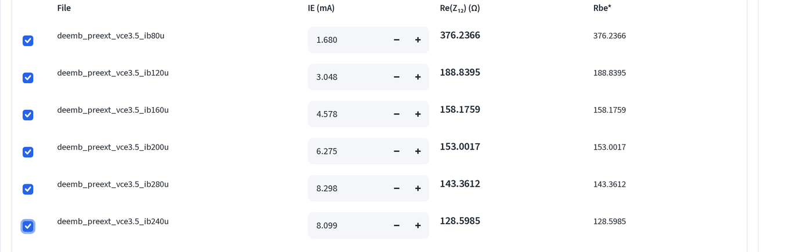
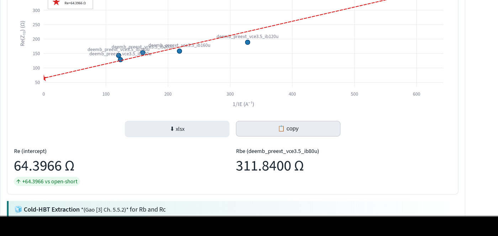
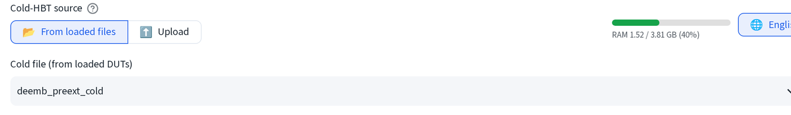
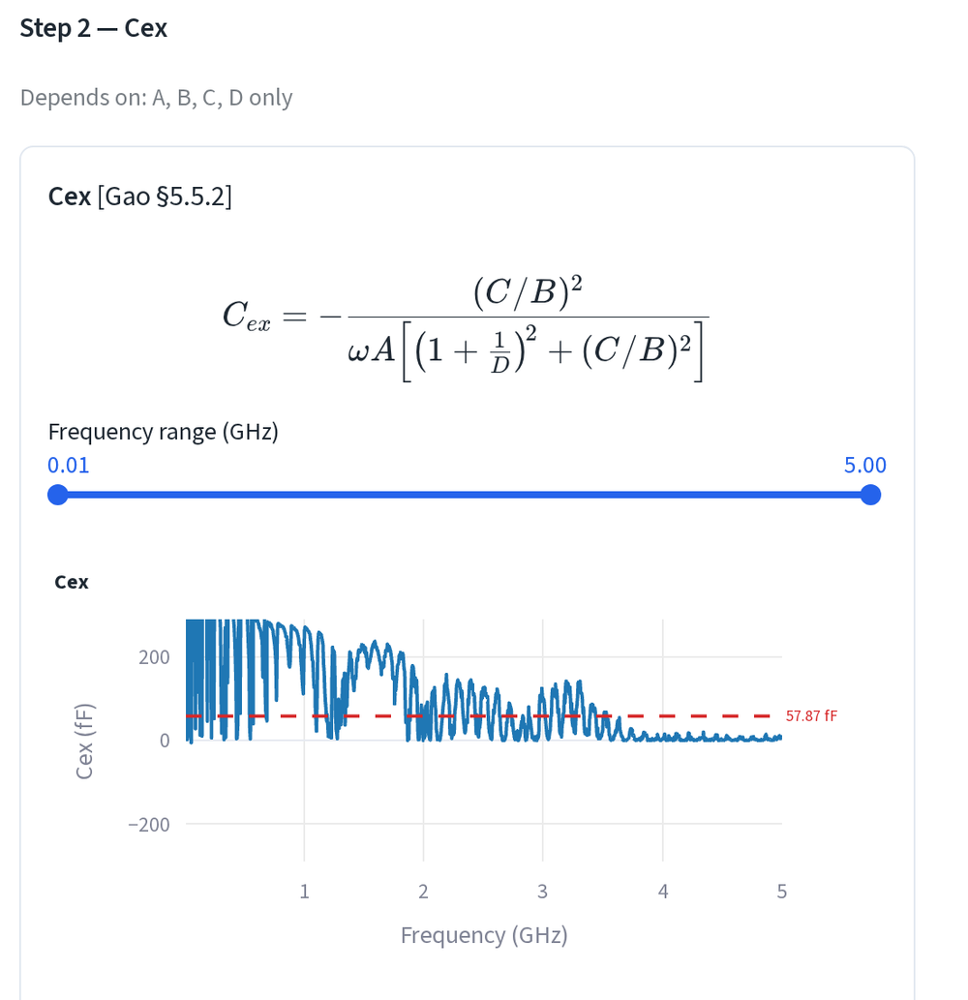
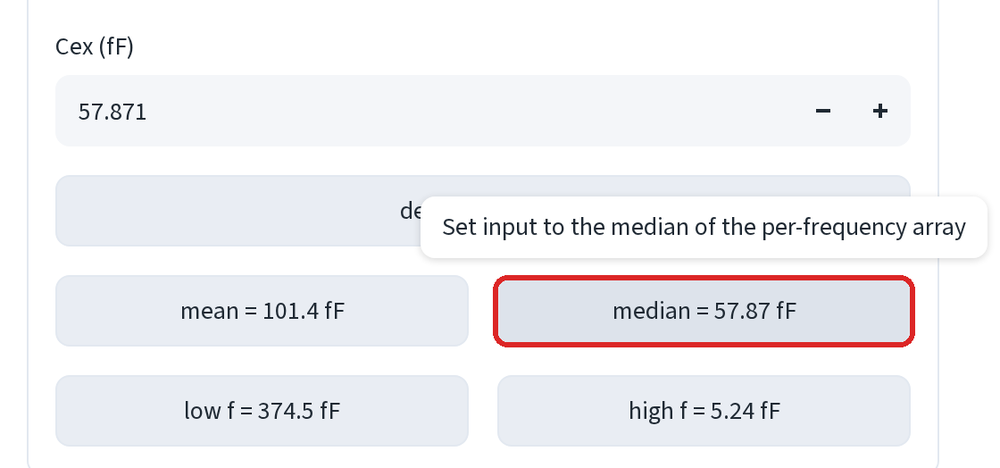
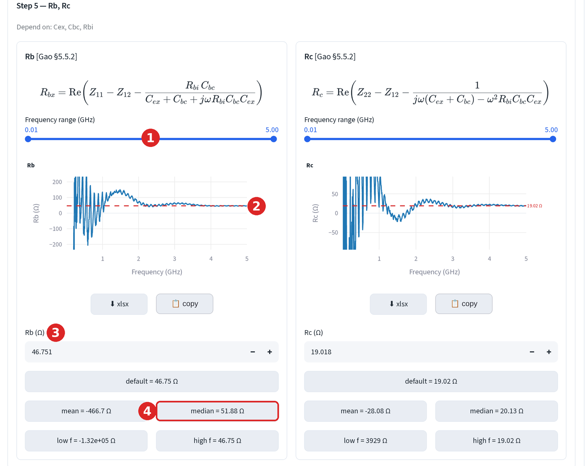

模型萃取：接觸電阻¶
在本質擬合之前先取得 Re、Rb 與 Rc。後續每一步都依賴這三個數字，值得花幾 分鐘處理好。
在萃取頁開啟🍊 存取電阻萃取 (🍊 Access Resistance Extraction)。
順序很重要
先執行 Z-parameter 方法求 Re，再執行 Cold-HBT 求 Rb 與 Rc。Gao
§5.5.2 在計算 A、B、C、D 之前，會先從 Z_cor 中移除 Re，因此冷態萃取
把 Re 當作輸入值。若先開啟 Cold-HBT，其 Re (Ω) 欄位會顯示
0.0000，在你毫無察覺的情況下，用完全沒有射極電阻擬合出 Rb 與 Rc。
以此元件為例，這正是 Rb = 29.29 Ω 與 Rb = 46.75 Ω 的差別所在。
步驟 1：Z-parameter 方法求 Re¶
Re 取自 Re(Z₁₂) 對 1/I_E 在整個偏壓掃描上的截距。開始前先載入多個偏壓 點，單一個點無法擬合出一條線。
-
表格列出每個已載入的檔案。勾選要納入的檔案，並輸入各自的射極電流。 使用 I_E = I_C + I_B，而非 I_C。

以示範元件為例：
檔案 I_C I_B I_E = I_C + I_B ib80u1.600 mA 80 µA 1.680 mA ib120u2.928 mA 120 µA 3.048 mA ib160u4.418 mA 160 µA 4.578 mA ib200u6.075 mA 200 µA 6.275 mA ib240u7.859 mA 240 µA 8.099 mA ib280u8.018 mA 280 µA 8.298 mA 冷態點（I_C = 77.68 µA，I_B = 0）不屬於此擬合；它會提供下方步驟 2 的 Cold-HBT 萃取使用。
-
從截距讀出 Re。

Re = 64.3966 Ω，最低電流檔案報出的 Rbe = 311.84 Ω。將這個數字帶 入步驟 2。
Tip
兩個電流最高的點幾乎重疊在一起（8.099 與 8.298 mA），因此兩者合起來 對擬合的約束力並不比單一個點更強。若截距看起來不穩定，將偏壓掃描 拉開一些。
步驟 2：Cold-HBT 求 Rb 與 Rc¶
「冷態」量測是指元件未施加偏壓時的量測。兩個接面都關閉時，Z₁₁ 與 Z₂₂ 簡化為接觸網路加上接面電容，一旦知道 Re，Rb 與 Rc 便可解出。
-
將 Cold-HBT 來源 (Cold-HBT source) 設為📂 從已載入檔案 (📂 From loaded files)，並從下拉選單選擇
deemb_preext_cold。若該檔案不在 已載入的 DUT 中，可在此直接上傳。
-
檢查 Cold-HBT 下方的 Re (Ω) 欄位。它應該已經帶有步驟 1 得到的 64.3966 Ω。若顯示
0.0000，代表 Z-parameter 擬合尚未執行：回頭先 完成它。 -
開啟📊 互動式參數萃取 (📊 Interactive Parameter Extraction)。步驟 2 萃取 Cex；Rb 與 Rc 都相依於它，Cbc 與 Rbi 亦然。

-
點選
median晶片改用中位數，57.87 fF。
預設值（188.7 fF）是低頻值，平均值（101.4 fF）同樣受到雜訊影響而 搖擺不定。逐頻率的陣列一旦越過低頻端就趨於平坦，因此中位數才是可信 的數字。下面的每一步都會沿用這個值。
-
步驟 5 現在給出 Rb = 46.751 Ω 與 Rc = 19.018 Ω。

- 頻率範圍：將其收窄至曲線平坦的頻段。
- 紅色虛線是目前使用中的數值。
- 數值框，直接輸入即可覆寫。
- 下方的晶片可由統計值填入數值框，點選即可套用。
兩條曲線在約 2 GHz 以上都會收斂到各自的虛線，且兩者的中位數 （51.88 Ω 與 20.13 Ω）都接近預設值。這種一致性正是萃取結果健全的 訊號。當平均值與中位數差異懸殊時，把頻率範圍拖到平坦的區段，再由 該處取值。
應該得到的結果¶
| 數值 | |
|---|---|
| Rb (=Rpb) | 46.7508 Ω |
| Rc (=Rpc) | 19.0178 Ω |
| Re (=Rpe) | 64.3966 Ω |
| Rbi（冷態） | 158637.0901 Ω |
| Cbe（冷態） | 119.9716 fF |
| Cbc（冷態） | 1458.7848 fF |
| Cex | 57.8714 fF |
Open-collector¶
第三種方法在集極開路的狀態下驅動基極-射極接面。當你有這項量測、又沒有 可用的冷態掃描時使用它；它是 Cold-HBT 步驟的替代方案，而非額外附加項目。
下一步：本質模型。